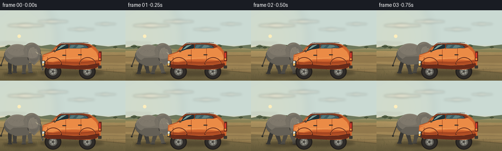
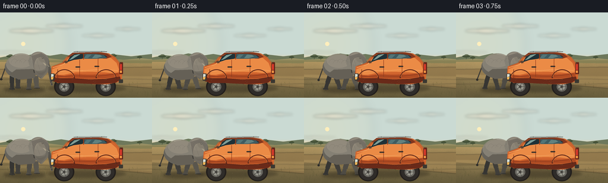
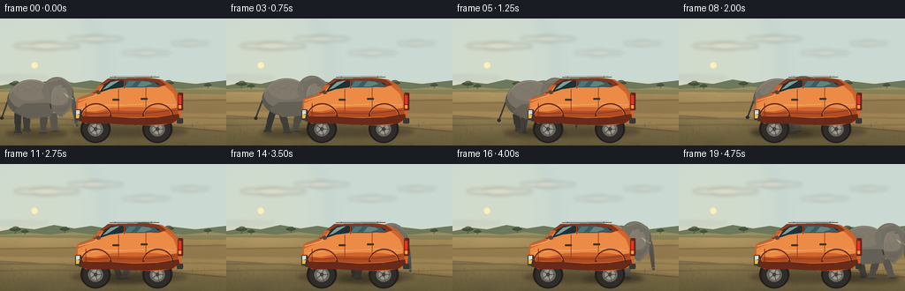
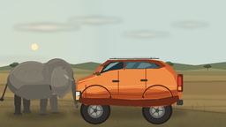
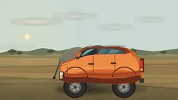
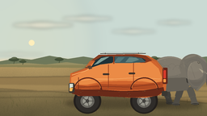
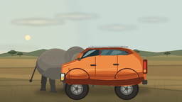
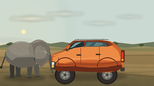
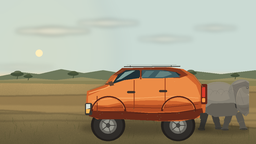
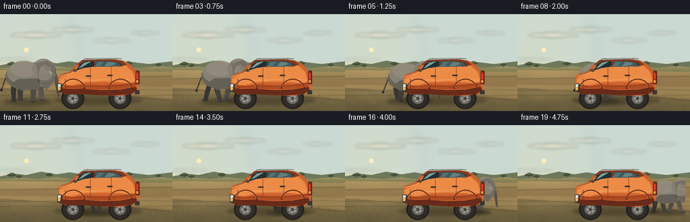

CODING AGENTS AS PIXEL WORLD MODELS
traex/DeepSeek-V4.1-Flash · dynamic_spatial_relationship_0063
点击播放 · 原生 RGB 像素
逐轮保存的候选
回放视频、检查图与代码变化。
每份候选均可单独播放。实际图片检查记录在下方工具轨迹中。
候选 01播放与检查图
点击播放 · 原生 RGB 像素


展开代码变化
--- 上一保存版本
+++ 本次保存版本
@@ -0,0 +1,621 @@
+"""Procedural savanna scene for the elephant-and-SUV spatial relationship prompt."""
+
+from __future__ import annotations
+
+import math
+from pathlib import Path
+
+import numpy as np
+from PIL import Image, ImageDraw, ImageFilter
+
+from artifact_io import save
+
+
+WIDTH = 256
+HEIGHT = 144
+FRAMES = 20
+FPS = 4.0
+SCALE = 4
+W = WIDTH * SCALE
+H = HEIGHT * SCALE
+CASE_DIR = Path(__file__).resolve().parent
+
+
+def sx(value: float) -> int:
+ return int(round(value * SCALE))
+
+
+def box(x0: float, y0: float, x1: float, y1: float) -> tuple[int, int, int, int]:
+ return sx(x0), sx(y0), sx(x1), sx(y1)
+
+
+def points(values: list[tuple[float, float]]) -> list[tuple[int, int]]:
+ return [(sx(x), sx(y)) for x, y in values]
+
+
+def lerp(a: float, b: float, t: float) -> float:
+ return a + (b - a) * t
+
+
+def mix_color(a: tuple[int, int, int], b: tuple[int, int, int], t: float) -> tuple[int, int, int]:
+ return tuple(int(round(lerp(x, y, t))) for x, y in zip(a, b))
+
+
+def smoothstep(t: float) -> float:
+ t = max(0.0, min(1.0, t))
+ return t * t * (3.0 - 2.0 * t)
+
+
+def make_background() -> Image.Image:
+ y = np.linspace(0.0, 1.0, H, dtype=np.float32)[:, None]
+ y3 = y[:, :, None]
+
+ sky_stops = [
+ (0.00, (82, 139, 184)),
+ (0.27, (126, 177, 204)),
+ (0.48, (202, 218, 211)),
+ (0.57, (244, 207, 157)),
+ ]
+ horizon = 0.56
+ sky = np.empty((H, W, 3), dtype=np.float32)
+ for index in range(len(sky_stops) - 1):
+ p0, c0 = sky_stops[index]
+ p1, c1 = sky_stops[index + 1]
+ local = np.clip((y - p0) / (p1 - p0), 0.0, 1.0)
+ local = local * local * (3.0 - 2.0 * local)
+ blend = local[:, :, None]
+ if index == 0:
+ sky = np.array(c0, dtype=np.float32) * (1.0 - blend) + np.array(c1, dtype=np.float32) * blend
+ else:
+ sky = np.where(y3 <= p1, np.array(c0) * (1.0 - blend) + np.array(c1) * blend, sky)
+
+ sky = np.broadcast_to(sky, (H, W, 3)).copy()
+ ground_mask = y > horizon
+ ground_top = np.array((170, 143, 92), dtype=np.float32)
+ ground_bottom = np.array((99, 89, 58), dtype=np.float32)
+ gt = np.clip((y - horizon) / (1.0 - horizon), 0.0, 1.0)
+ ground = ground_top * (1.0 - gt[:, :, None]) + ground_bottom * gt[:, :, None]
+ sky = np.where(ground_mask[:, :, None], ground, sky)
+
+ rng = np.random.default_rng(17)
+ coarse = rng.normal(0.0, 1.0, (24, 40)).astype(np.float32)
+ coarse = np.asarray(
+ Image.fromarray(((coarse - coarse.min()) / (coarse.max() - coarse.min()) * 255).astype(np.uint8))
+ .resize((W, H), Image.Resampling.BICUBIC)
+ .filter(ImageFilter.GaussianBlur(5 * SCALE))
+ ).astype(np.float32) / 255.0
+ fine = rng.normal(0.0, 1.0, (H, W)).astype(np.float32)
+ grain = 0.55 * (coarse - 0.5) + 0.12 * fine
+ ground_texture = ground_mask[:, :, None] * grain[:, :, None] * np.array((38.0, 31.0, 20.0))
+ sky += ground_texture
+ sky = np.clip(sky, 0, 255).astype(np.uint8)
+ image = Image.fromarray(sky, "RGB").convert("RGBA")
+
+ glow = Image.new("RGBA", (W, H), (0, 0, 0, 0))
+ gd = ImageDraw.Draw(glow)
+ sun_x, sun_y = sx(39), sx(53)
+ for radius, alpha in ((78, 18), (52, 25), (31, 35)):
+ gd.ellipse(
+ (sun_x - radius * SCALE, sun_y - radius * SCALE, sun_x + radius * SCALE, sun_y + radius * SCALE),
+ fill=(255, 224, 155, alpha),
+ )
+ glow = glow.filter(ImageFilter.GaussianBlur(8 * SCALE))
+ image = Image.alpha_composite(image, glow)
+
+ draw = ImageDraw.Draw(image)
+ draw.ellipse(box(35.5, 49.5, 42.5, 56.5), fill=(255, 238, 188, 255))
+
+ # Thin, wind-shaped clouds catch the warm light near the horizon.
+ cloud_layer = Image.new("RGBA", (W, H), (0, 0, 0, 0))
+ cd = ImageDraw.Draw(cloud_layer)
+ clouds = [
+ (54, 31, 76, 8, 92),
+ (109, 23, 63, 7, 76),
+ (166, 39, 56, 6, 68),
+ (216, 28, 44, 5, 72),
+ (20, 67, 72, 4, 50),
+ ]
+ for cx, cy, cw, ch, alpha in clouds:
+ for off, height, strength in ((-0.23, 0.7, 0.7), (0.0, 1.0, 1.0), (0.24, 0.62, 0.78)):
+ x0 = cx + cw * off - cw * 0.28
+ y0 = cy - ch * height * 0.5
+ cd.ellipse(box(x0, y0, x0 + cw * 0.52, y0 + ch * height), fill=(255, 232, 205, int(alpha * strength)))
+ cloud_layer = cloud_layer.filter(ImageFilter.GaussianBlur(2.1 * SCALE))
+ image = Image.alpha_composite(image, cloud_layer)
+
+ # Hazy hills establish depth without competing with the two subjects.
+ hills = Image.new("RGBA", (W, H), (0, 0, 0, 0))
+ hd = ImageDraw.Draw(hills)
+ hd.polygon(
+ points(
+ [
+ (0, 82),
+ (0, 76),
+ (21, 72),
+ (39, 74),
+ (61, 69),
+ (84, 73),
+ (103, 70),
+ (127, 74),
+ (148, 71),
+ (171, 75),
+ (195, 71),
+ (221, 74),
+ (256, 70),
+ (256, 83),
+ ]
+ ),
+ fill=(100, 112, 83, 235),
+ )
+ hd.polygon(
+ points(
+ [
+ (0, 83),
+ (0, 80),
+ (34, 78),
+ (56, 80),
+ (82, 77),
+ (105, 80),
+ (132, 78),
+ (157, 81),
+ (184, 78),
+ (208, 80),
+ (238, 77),
+ (256, 79),
+ (256, 86),
+ ]
+ ),
+ fill=(129, 126, 83, 205),
+ )
+ image = Image.alpha_composite(image, hills)
+
+ # Distant acacias and shrubs.
+ tree_layer = Image.new("RGBA", (W, H), (0, 0, 0, 0))
+ td = ImageDraw.Draw(tree_layer)
+ tree_data = [
+ (17, 79, 12, 7),
+ (28, 80, 8, 5),
+ (73, 78, 10, 6),
+ (119, 80, 7, 5),
+ (190, 78, 12, 7),
+ (235, 79, 8, 5),
+ ]
+ for tx, ty, tw, th in tree_data:
+ td.line((sx(tx), sx(ty), sx(tx + 1), sx(ty - th * 0.85)), fill=(64, 73, 50, 210), width=sx(0.7))
+ td.ellipse(box(tx - tw * 0.55, ty - th, tx + tw * 0.55, ty - th * 0.43), fill=(60, 74, 50, 220))
+ td.ellipse(box(tx - tw * 0.25, ty - th * 1.18, tx + tw * 0.35, ty - th * 0.78), fill=(70, 82, 52, 205))
+ image = Image.alpha_composite(image, tree_layer)
+
+ # Dirt track with softer shoulders and two long tire ruts.
+ road_layer = Image.new("RGBA", (W, H), (0, 0, 0, 0))
+ rd = ImageDraw.Draw(road_layer)
+ rd.polygon(points([(0, 106), (0, 96), (256, 92), (256, 128)]), fill=(145, 119, 75, 190))
+ rd.polygon(points([(0, 110), (0, 105), (256, 108), (256, 124)]), fill=(171, 141, 89, 155))
+ rd.line(points([(0, 113), (52, 113), (107, 112), (164, 113), (221, 112), (256, 113)]),
+ fill=(112, 95, 65, 115), width=sx(1.1))
+ rd.line(points([(0, 121), (48, 120), (104, 121), (159, 120), (219, 121), (256, 120)]),
+ fill=(104, 88, 60, 90), width=sx(1.0))
+ road_layer = road_layer.filter(ImageFilter.GaussianBlur(0.65 * SCALE))
+ image = Image.alpha_composite(image, road_layer)
+
+ # Fine grass silhouettes at the lower edge.
+ grass = Image.new("RGBA", (W, H), (0, 0, 0, 0))
+ gd = ImageDraw.Draw(grass)
+ rng = np.random.default_rng(31)
+ for i in range(82):
+ gx = float(rng.uniform(0, WIDTH))
+ gy = float(rng.uniform(119, 143))
+ length = float(rng.uniform(2.5, 8.0)) * (0.65 + (gy - 119) / 50)
+ lean = float(rng.uniform(-1.8, 1.8))
+ color = (72 + int(rng.integers(-12, 13)), 75 + int(rng.integers(-10, 11)), 40, int(rng.uniform(90, 180)))
+ gd.line((sx(gx), sx(gy), sx(gx + lean), sx(gy - length)), fill=color, width=max(1, sx(0.35)))
+ if i % 3 == 0:
+ gd.line((sx(gx), sx(gy), sx(gx + lean * 1.5), sx(gy - length * 0.68)),
+ fill=color, width=max(1, sx(0.28)))
+ image = Image.alpha_composite(image, grass)
+ return image.convert("RGB")
+
+
+def bezier(p0, p1, p2, p3, count: int = 28) -> list[tuple[float, float]]:
+ result = []
+ for i in range(count):
+ t = i / (count - 1)
+ omt = 1.0 - t
+ x = omt**3 * p0[0] + 3 * omt**2 * t * p1[0] + 3 * omt * t**2 * p2[0] + t**3 * p3[0]
+ y = omt**3 * p0[1] + 3 * omt**2 * t * p1[1] + 3 * omt * t**2 * p2[1] + t**3 * p3[1]
+ result.append((x, y))
+ return result
+
+
+def draw_shadow(layer: Image.Image, x: float, y: float, width: float, height: float, alpha: int = 80) -> None:
+ shadow = Image.new("RGBA", (W, H), (0, 0, 0, 0))
+ sd = ImageDraw.Draw(shadow)
+ sd.ellipse(box(x - width * 0.5, y - height * 0.5, x + width * 0.5, y + height * 0.5),
+ fill=(39, 34, 24, alpha))
+ shadow = shadow.filter(ImageFilter.GaussianBlur(2.4 * SCALE))
+ layer.alpha_composite(shadow)
+
+
+def draw_elephant(layer: Image.Image, cx: float, t: float, dust: Image.Image | None = None) -> None:
+ base = 129.0
+ phase = t * math.tau * 2.15
+ bob = 1.15 * math.sin(phase * 2.0 + 0.25)
+ sway = math.sin(phase * 0.5)
+ body_y = base - 38 + bob
+ skin_dark = (65, 63, 59, 255)
+ skin_mid = (91, 88, 80, 255)
+ skin_light = (119, 113, 101, 255)
+ skin_high = (146, 137, 121, 255)
+
+ # Ground shadow and dust sit behind the animal.
+ draw_shadow(layer, cx + 2, base + 1, 70, 10, 105)
+ if dust is not None:
+ dd = ImageDraw.Draw(dust)
+ for foot_x, foot_phase in (
+ (cx - 17, phase),
+ (cx - 8, phase + math.pi),
+ (cx + 12, phase + 0.4),
+ (cx + 22, phase + math.pi + 0.4),
+ ):
+ contact = max(0.0, math.cos(foot_phase))
+ if contact > 0.15:
+ for k in range(3):
+ dx = foot_x - 3 - k * 3.5 - (t * 6.0) % 3
+ dy = base - 1 - k * 1.3
+ rr = 2.1 + k * 0.8
+ dd.ellipse(box(dx - rr, dy - rr * 0.65, dx + rr, dy + rr * 0.65),
+ fill=(205, 176, 119, int(35 * contact / (k + 1))))
+
+ legs = [
+ (-19.0, phase + math.pi, (54, 53, 50, 255), 7.7),
+ (-9.0, phase, (64, 62, 57, 255), 8.2),
+ (11.0, phase + math.pi + 0.25, (78, 75, 68, 255), 8.4),
+ (21.0, phase + 0.25, (90, 86, 77, 255), 8.8),
+ ]
+ for hip_x, leg_phase, color, thickness in legs:
+ swing = math.sin(leg_phase)
+ lift = max(0.0, math.cos(leg_phase)) * 2.2
+ hip = (cx + hip_x, body_y + 16)
+ knee = (cx + hip_x + swing * 4.2, body_y + 28 - lift * 0.25)
+ foot = (cx + hip_x + swing * 7.2, base - lift)
+ draw = ImageDraw.Draw(layer)
+ draw.line((sx(hip[0]), sx(hip[1]), sx(knee[0]), sx(knee[1])), fill=color,
+ width=sx(thickness), joint="curve")
+ draw.line((sx(knee[0]), sx(knee[1]), sx(foot[0]), sx(foot[1])), fill=color,
+ width=sx(thickness * 0.84), joint="curve")
+ draw.ellipse(box(foot[0] - thickness * 0.58, foot[1] - 2.0,
+ foot[0] + thickness * 0.58, foot[1] + 1.2), fill=color)
+ draw.ellipse(box(foot[0] - thickness * 0.46, foot[1] + 0.1,
+ foot[0] + thickness * 0.58, foot[1] + 1.7), fill=(45, 44, 41, 255))
+ draw.line((sx(foot[0] - thickness * 0.35), sx(foot[1] + 1.0),
+ sx(foot[0] + thickness * 0.44), sx(foot[1] + 1.0)),
+ fill=(166, 155, 132, 125), width=max(1, sx(0.25)))
+
+ draw = ImageDraw.Draw(layer)
+
+ # Tail, with a small tuft that swings behind the body.
+ tail_top = (cx - 28, body_y - 4)
+ tail_tip = (cx - 37 - sway * 1.4, body_y + 21 + sway * 2.0)
+ draw.line((sx(tail_top[0]), sx(tail_top[1]), sx(tail_tip[0]), sx(tail_tip[1])),
+ fill=(60, 58, 53, 255), width=sx(1.7), joint="curve")
+ draw.ellipse(box(tail_tip[0] - 1.9, tail_tip[1] - 1.4, tail_tip[0] + 1.9, tail_tip[1] + 2.2),
+ fill=(44, 43, 40, 255))
+
+ # Main body and shoulder mass.
+ draw.ellipse(box(cx - 31, body_y - 19, cx + 26, body_y + 21), fill=skin_mid)
+ draw.ellipse(box(cx - 29, body_y - 21, cx + 23, body_y + 13), fill=skin_light)
+ draw.ellipse(box(cx - 24, body_y - 22, cx + 17, body_y + 2), fill=mix_color(skin_light, skin_high, 0.35))
+ draw.polygon(
+ points(
+ [
+ (cx - 23, body_y + 13),
+ (cx - 8, body_y + 22),
+ (cx + 18, body_y + 20),
+ (cx + 24, body_y + 9),
+ (cx + 18, body_y + 4),
+ (cx - 12, body_y + 5),
+ ]
+ ),
+ fill=(101, 96, 86, 255),
+ )
+ draw.arc(box(cx - 29, body_y - 21, cx + 24, body_y + 21), 198, 342, fill=(148, 139, 123, 170), width=sx(0.8))
+
+ # Rear ear, head, and near ear.
+ ear_sway = math.sin(phase * 0.5 + 0.6) * 1.2
+ ear_back = [
+ (cx + 13, body_y - 18),
+ (cx + 28 + ear_sway, body_y - 22),
+ (cx + 39, body_y - 12),
+ (cx + 39, body_y + 8),
+ (cx + 29, body_y + 20),
+ (cx + 18, body_y + 10),
+ ]
+ draw.polygon(points(ear_back), fill=(55, 53, 49, 255))
+ draw.ellipse(box(cx + 14, body_y - 19, cx + 43, body_y + 10), fill=skin_dark)
+ draw.ellipse(box(cx + 19, body_y - 20, cx + 44, body_y + 7), fill=skin_mid)
+ draw.ellipse(box(cx + 24, body_y - 17, cx + 41, body_y + 2), fill=(110, 105, 94, 255))
+
+ # Trunk starts at the forehead and curls forward/down.
+ trunk_base = (cx + 35, body_y - 9)
+ tip_x = cx + 48 + math.sin(phase * 0.42) * 1.2
+ trunk_curve = bezier(
+ trunk_base,
+ (cx + 45, body_y - 5),
+ (cx + 45, body_y + 16),
+ (tip_x, body_y + 30 + math.sin(phase * 0.42 + 0.5) * 1.2),
+ 24,
+ )
+ for i, (tx, ty) in enumerate(trunk_curve):
+ u = i / (len(trunk_curve) - 1)
+ radius = lerp(4.2, 1.55, u)
+ color = mix_color((101, 97, 88), (67, 65, 60), u * 0.75)
+ draw.ellipse(box(tx - radius, ty - radius, tx + radius, ty + radius), fill=(*color, 255))
+ draw.arc(box(tip_x - 2.2, body_y + 27, tip_x + 3.0, body_y + 32), 12, 290,
+ fill=(142, 132, 113, 210), width=sx(0.55))
+
+ # Head sits over the shoulder and ear.
+ head_cx = cx + 24
+ head_cy = body_y - 10
+ draw.ellipse(box(head_cx - 15, head_cy - 15, head_cx + 18, head_cy + 17), fill=skin_light)
+ draw.ellipse(box(head_cx - 10, head_cy - 14, head_cx + 16, head_cy + 7),
+ fill=mix_color(skin_light, skin_high, 0.36))
+ draw.ellipse(box(head_cx + 2, head_cy - 11, head_cx + 18, head_cy + 3), fill=(125, 119, 107, 255))
+
+ # Tusk and eye.
+ draw.polygon(
+ points(
+ [
+ (head_cx + 9, head_cy + 3),
+ (head_cx + 17, head_cy + 7),
+ (head_cx + 20, head_cy + 10),
+ (head_cx + 13, head_cy + 8),
+ ]
+ ),
+ fill=(231, 217, 176, 255),
+ )
+ draw.ellipse(box(head_cx + 7.2, head_cy - 6.3, head_cx + 10.2, head_cy - 3.3), fill=(31, 29, 26, 255))
+ draw.ellipse(box(head_cx + 8.0, head_cy - 5.8, head_cx + 9.3, head_cy - 4.5), fill=(229, 218, 189, 255))
+
+ # Near ear is broad and translucent at the edge.
+ near_ear = [
+ (cx + 14, body_y - 18),
+ (cx + 30 + ear_sway * 0.7, body_y - 23),
+ (cx + 43, body_y - 13),
+ (cx + 42, body_y + 9),
+ (cx + 31, body_y + 21),
+ (cx + 20, body_y + 13),
+ (cx + 17, body_y - 2),
+ ]
+ ear_layer = Image.new("RGBA", (W, H), (0, 0, 0, 0))
+ ed = ImageDraw.Draw(ear_layer)
+ ed.polygon(points(near_ear), fill=(114, 109, 99, 225))
+ ed.ellipse(box(cx + 20, body_y - 16, cx + 38, body_y + 13), fill=(136, 128, 114, 160))
+ ed.arc(box(cx + 19, body_y - 17, cx + 40, body_y + 16), 72, 238, fill=(166, 153, 132, 145), width=sx(0.7))
+ ed.line((sx(cx + 23), sx(body_y - 10), sx(cx + 28), sx(body_y + 5)),
+ fill=(83, 80, 73, 120), width=max(1, sx(0.35)))
+ layer.alpha_composite(ear_layer)
+
+ # Sparse wrinkles make the animal read at the small output size.
+ wrinkles = Image.new("RGBA", (W, H), (0, 0, 0, 0))
+ wd = ImageDraw.Draw(wrinkles)
+ for i in range(5):
+ ox = -21 + i * 7
+ wd.arc(box(cx + ox, body_y - 13 + (i % 2) * 2, cx + ox + 13, body_y + 9),
+ 205, 322, fill=(50, 49, 46, 65), width=max(1, sx(0.3)))
+ wd.arc(box(head_cx - 7, head_cy - 8, head_cx + 12, head_cy + 7), 205, 310,
+ fill=(63, 61, 56, 75), width=max(1, sx(0.35)))
+ layer.alpha_composite(wrinkles)
+
+
+def draw_car(layer: Image.Image, t: float) -> None:
+ # Parked, front-left SUV; the rear is deliberately clear on the right.
+ draw_shadow(layer, 146, 128, 132, 12, 105)
+ draw = ImageDraw.Draw(layer)
+
+ body_dark = (105, 42, 25, 255)
+ body_mid = (176, 76, 35, 255)
+ body_orange = (209, 101, 46, 255)
+ body_light = (235, 139, 70, 255)
+ body_high = (248, 175, 103, 255)
+ glass_dark = (30, 49, 55, 255)
+ glass_mid = (62, 91, 96, 255)
+ glass_light = (126, 158, 151, 255)
+
+ # Rear wheel and front wheel, then body over their upper halves.
+ for wheel_x in (108.0, 178.0):
+ draw.ellipse(box(wheel_x - 17, 109, wheel_x + 17, 141), fill=(35, 31, 28, 255))
+ draw.ellipse(box(wheel_x - 14.5, 111.2, wheel_x + 14.5, 139.2), fill=(47, 44, 41, 255))
+ draw.ellipse(box(wheel_x - 8.6, 117.3, wheel_x + 8.6, 133.5), fill=(105, 103, 96, 255))
+ draw.ellipse(box(wheel_x - 5.8, 119.8, wheel_x + 5.8, 131.0), fill=(151, 150, 140, 255))
+ draw.ellipse(box(wheel_x - 2.0, 123.0, wheel_x + 2.0, 127.5), fill=(67, 65, 61, 255))
+ for angle in range(0, 360, 72):
+ rad = math.radians(angle)
+ x1 = wheel_x + math.cos(rad) * 2.2
+ y1 = 125.3 + math.sin(rad) * 2.2
+ x2 = wheel_x + math.cos(rad) * 7.5
+ y2 = 125.3 + math.sin(rad) * 7.5
+ draw.line((sx(x1), sx(y1), sx(x2), sx(y2)), fill=(70, 68, 63, 255), width=sx(0.8))
+
+ # Main side silhouette.
+ body = [
+ (86, 103),
+ (87, 91),
+ (96, 88),
+ (104, 85),
+ (111, 76),
+ (118, 71),
+ (129, 68),
+ (169, 67),
+ (183, 69),
+ (194, 75),
+ (202, 85),
+ (206, 98),
+ (205, 112),
+ (198, 118),
+ (181, 121),
+ (157, 121),
+ (139, 119),
+ (117, 119),
+ (97, 119),
+ (89, 115),
+ ]
+ draw.polygon(points(body), fill=body_orange)
+ draw.polygon(
+ points(
+ [
+ (88, 105),
+ (88, 96),
+ (99, 91),
+ (107, 87),
+ (115, 78),
+ (123, 73),
+ (130, 71),
+ (164, 71),
+ (177, 72),
+ (187, 77),
+ (196, 85),
+ (200, 96),
+ (199, 104),
+ (177, 101),
+ (151, 100),
+ (127, 101),
+ (108, 105),
+ ]
+ ),
+ fill=body_light,
+ )
+ draw.polygon(
+ points(
+ [
+ (87, 110),
+ (89, 116),
+ (99, 119),
+ (120, 119),
+ (140, 120),
+ (164, 121),
+ (194, 119),
+ (203, 113),
+ (202, 108),
+ (178, 112),
+ (151, 113),
+ (124, 111),
+ (104, 111),
+ ]
+ ),
+ fill=body_dark,
+ )
+ draw.polygon(
+ points([(89, 104), (89, 111), (105, 110), (124, 111), (151, 112), (179, 111), (201, 108),
+ (202, 101), (179, 104), (151, 105), (125, 104), (108, 107)]),
+ fill=body_mid,
+ )
+
+ # Roof and greenhouse.
+ draw.polygon(
+ points([(113, 75), (122, 68), (165, 67), (180, 69), (188, 75), (179, 78), (157, 77), (135, 77)]),
+ fill=(134, 55, 29, 255),
+ )
+ draw.polygon(
+ points([(117, 75), (125, 71), (164, 70), (176, 72), (181, 75), (169, 77), (144, 77), (126, 76)]),
+ fill=glass_dark,
+ )
+ # Windshield and side glass, separated by an orange pillar.
+ draw.polygon(points([(118, 75), (126, 70), (139, 70), (139, 78), (124, 80), (112, 84)]), fill=glass_dark)
+ draw.polygon(points([(142, 70), (162, 70), (175, 72), (180, 77), (163, 78), (142, 78)]), fill=glass_mid)
+ draw.polygon(points([(125, 72), (132, 70.5), (135, 70.4), (121, 79), (116, 80.5)]), fill=glass_light)
+ draw.polygon(points([(146, 71), (154, 71), (148, 77), (141, 77)]), fill=(82, 116, 118, 255))
+ draw.polygon(points([(160, 71), (168, 71.5), (172, 74), (163, 77), (155, 77)]), fill=(99, 129, 126, 255))
+ draw.line((sx(140.5), sx(70), sx(140.5), sx(79)), fill=(145, 62, 31, 255), width=sx(1.4))
+
+ # Hood highlight and side character lines.
+ draw.line((sx(89), sx(93), sx(105), sx(88), sx(114), sx(84)), fill=body_high, width=sx(1.0))
+ draw.line((sx(92), sx(101), sx(113), sx(98), sx(140), sx(98), sx(173), sx(96), sx(198), sx(98)),
+ fill=(249, 174, 106, 190), width=sx(0.8))
+ draw.line((sx(97), sx(108), sx(126), sx(107), sx(159), sx(108), sx(198), sx(104)),
+ fill=(121, 47, 26, 210), width=sx(0.75))
+ draw.line((sx(101), sx(112), sx(135), sx(113), sx(171), sx(113), sx(198), sx(110)),
+ fill=(72, 33, 23, 145), width=sx(0.6))
+ draw.line((sx(134), sx(80), sx(134), sx(108)), fill=(143, 57, 28, 220), width=sx(0.7))
+ draw.line((sx(165), sx(78), sx(165), sx(108)), fill=(148, 60, 29, 195), width=sx(0.65))
+ draw.line((sx(97), sx(96), sx(97), sx(112)), fill=(117, 47, 25, 185), width=sx(0.65))
+
+ # Door handles and mirror.
+ draw.rounded_rectangle(box(127, 91, 135, 93), radius=sx(1.1), fill=(62, 50, 42, 255))
+ draw.rounded_rectangle(box(159, 90, 167, 92), radius=sx(1.1), fill=(62, 50, 42, 255))
+ draw.line((sx(111), sx(84), sx(105), sx(84)), fill=(73, 55, 44, 255), width=sx(1.0))
+ draw.polygon(points([(108, 82), (112, 81), (114, 85), (110, 86)]), fill=(95, 68, 50, 255))
+
+ # Front bumper, grille, headlight, rear lamp and roof rails.
+ draw.rounded_rectangle(box(85, 103, 92, 115), radius=sx(1.4), fill=(59, 55, 49, 255))
+ draw.polygon(points([(86, 104), (90, 104), (90, 108), (86, 109)]), fill=(215, 222, 210, 255))
+ draw.polygon(points([(86, 109), (90, 109), (89, 113), (86, 113)]), fill=(246, 185, 90, 255))
+ draw.rounded_rectangle(box(201, 84, 207, 104), radius=sx(1.2), fill=(99, 38, 26, 255))
+ draw.rounded_rectangle(box(202, 87, 205, 97), radius=sx(0.8), fill=(219, 59, 43, 255))
+ draw.rounded_rectangle(box(202, 98, 205, 102), radius=sx(0.7), fill=(250, 153, 69, 255))
+ draw.rounded_rectangle(box(200, 113, 207, 119), radius=sx(1.0), fill=(58, 55, 49, 255))
+ draw.line((sx(124), sx(66.5), sx(180), sx(66)), fill=(63, 58, 52, 255), width=sx(1.0))
+ draw.line((sx(127), sx(65), sx(176), sx(64.6)), fill=(145, 144, 134, 255), width=sx(0.5))
+ draw.line((sx(130), sx(65.5), sx(130), sx(67)), fill=(51, 48, 44, 255), width=sx(0.6))
+ draw.line((sx(171), sx(65.2), sx(171), sx(66.7)), fill=(51, 48, 44, 255), width=sx(0.6))
+
+ # Wheel arches and mud spatter.
+ draw.arc(box(91, 96, 126, 128), 184, 357, fill=(83, 34, 23, 255), width=sx(2.0))
+ draw.arc(box(161, 96, 196, 128), 184, 357, fill=(83, 34, 23, 255), width=sx(2.0))
+ draw.arc(box(92.2, 97.2, 124.8, 126.0), 190, 350, fill=(226, 125, 61, 180), width=sx(0.65))
+ draw.arc(box(162.2, 97.2, 194.8, 126.0), 190, 350, fill=(226, 125, 61, 180), width=sx(0.65))
+ rng = np.random.default_rng(7)
+ for _ in range(18):
+ mx = float(rng.uniform(96, 197))
+ my = float(rng.uniform(108, 120))
+ rr = float(rng.uniform(0.25, 0.85))
+ draw.ellipse(box(mx, my, mx + rr, my + rr), fill=(111, 82, 53, int(rng.uniform(60, 130))))
+
+ # Warm edge light from the low sun.
+ edge = Image.new("RGBA", (W, H), (0, 0, 0, 0))
+ ed = ImageDraw.Draw(edge)
+ ed.line(points([(90, 90), (104, 85), (113, 76), (123, 70), (164, 69), (182, 71), (194, 76), (203, 87)]),
+ fill=(255, 206, 141, 165), width=sx(0.8))
+ edge = edge.filter(ImageFilter.GaussianBlur(0.45 * SCALE))
+ layer.alpha_composite(edge)
+
+
+def foreground_details(image: Image.Image, t: float) -> None:
+ layer = Image.new("RGBA", (W, H), (0, 0, 0, 0))
+ draw = ImageDraw.Draw(layer)
+ # A few warm dust motes drift through the sunlight.
+ rng = np.random.default_rng(91)
+ for i in range(18):
+ x = (rng.uniform(0, 256) - t * 6.0) % 256
+ y = rng.uniform(62, 127)
+ alpha = int(rng.uniform(24, 70))
+ radius = rng.uniform(0.25, 0.65)
+ draw.ellipse(box(x, y, x + radius, y + radius), fill=(255, 224, 168, alpha))
+ image.paste(layer, (0, 0), layer)
+
+
+def render_frame(t: float) -> np.ndarray:
+ image = make_background().convert("RGBA")
+
+ # Elephant motion is mostly linear, with a gentle gait speed variation.
+ u = t + 0.035 * math.sin(t * math.tau)
+ cx = lerp(39.0, 213.0, u)
+
+ # The car always occludes the elephant, making the walk behind the SUV explicit.
+ dust = Image.new("RGBA", (W, H), (0, 0, 0, 0))
+ draw_elephant(image, cx, t, dust)
+ dust = dust.filter(ImageFilter.GaussianBlur(1.2 * SCALE))
+ image.alpha_composite(dust)
+ draw_car(image, t)
+ foreground_details(image, t)
+
+ final = image.convert("RGB").resize((WIDTH, HEIGHT), Image.Resampling.LANCZOS)
+ return np.asarray(final, dtype=np.uint8)
+
+
+def main() -> None:
+ frames = [render_frame(index / (FRAMES - 1)) for index in range(FRAMES)]
+ save(frames, CASE_DIR)
+
+
+if __name__ == "__main__":
+ main()
候选 02播放与检查图
点击播放 · 原生 RGB 像素


展开代码变化
--- 上一保存版本
+++ 本次保存版本
@@ -89,7 +89,7 @@
ground_texture = ground_mask[:, :, None] * grain[:, :, None] * np.array((38.0, 31.0, 20.0))
sky += ground_texture
sky = np.clip(sky, 0, 255).astype(np.uint8)
- image = Image.fromarray(sky, "RGB").convert("RGBA")
+ image = Image.fromarray(sky).convert("RGBA")
glow = Image.new("RGBA", (W, H), (0, 0, 0, 0))
gd = ImageDraw.Draw(glow)
@@ -236,16 +236,23 @@
layer.alpha_composite(shadow)
-def draw_elephant(layer: Image.Image, cx: float, t: float, dust: Image.Image | None = None) -> None:
+def draw_elephant(
+ target: Image.Image,
+ cx: float,
+ t: float,
+ dust: Image.Image | None = None,
+ scale: float = 1.0,
+) -> None:
+ layer = Image.new("RGBA", (W, H), (0, 0, 0, 0))
base = 129.0
phase = t * math.tau * 2.15
bob = 1.15 * math.sin(phase * 2.0 + 0.25)
sway = math.sin(phase * 0.5)
body_y = base - 38 + bob
- skin_dark = (65, 63, 59, 255)
- skin_mid = (91, 88, 80, 255)
- skin_light = (119, 113, 101, 255)
- skin_high = (146, 137, 121, 255)
+ skin_dark = (72, 71, 66, 255)
+ skin_mid = (102, 99, 91, 255)
+ skin_light = (133, 128, 116, 255)
+ skin_high = (166, 156, 138, 255)
# Ground shadow and dust sit behind the animal.
draw_shadow(layer, cx + 2, base + 1, 70, 10, 105)
@@ -405,6 +412,24 @@
wd.arc(box(head_cx - 7, head_cy - 8, head_cx + 12, head_cy + 7), 205, 310,
fill=(63, 61, 56, 75), width=max(1, sx(0.35)))
layer.alpha_composite(wrinkles)
+
+ # Scale the complete animal around its feet so it remains fully readable
+ # at both ends of the pass while still appearing to recede behind the car.
+ crop_x0 = sx(cx - 52)
+ crop_y0 = sx(base - 75)
+ crop_x1 = sx(cx + 58)
+ crop_y1 = sx(base + 10)
+ animal = layer.crop((crop_x0, crop_y0, crop_x1, crop_y1))
+ new_size = (
+ max(1, int(round(animal.width * scale))),
+ max(1, int(round(animal.height * scale))),
+ )
+ animal = animal.resize(new_size, Image.Resampling.LANCZOS)
+ dest = (
+ int(round(sx(cx) - 52 * scale * SCALE)),
+ int(round(sx(base) - 75 * scale * SCALE)),
+ )
+ target.alpha_composite(animal, dest)
def draw_car(layer: Image.Image, t: float) -> None:
@@ -598,11 +623,12 @@
# Elephant motion is mostly linear, with a gentle gait speed variation.
u = t + 0.035 * math.sin(t * math.tau)
- cx = lerp(39.0, 213.0, u)
+ cx = lerp(39.0, 221.0, u)
+ scale = lerp(1.0, 0.8, smoothstep(u))
# The car always occludes the elephant, making the walk behind the SUV explicit.
dust = Image.new("RGBA", (W, H), (0, 0, 0, 0))
- draw_elephant(image, cx, t, dust)
+ draw_elephant(image, cx, t, dust, scale)
dust = dust.filter(ImageFilter.GaussianBlur(1.2 * SCALE))
image.alpha_composite(dust)
draw_car(image, t)
候选 03播放与检查图
点击播放 · 原生 RGB 像素
展开代码变化
--- 上一保存版本
+++ 本次保存版本
@@ -308,10 +308,15 @@
draw.ellipse(box(tail_tip[0] - 1.9, tail_tip[1] - 1.4, tail_tip[0] + 1.9, tail_tip[1] + 2.2),
fill=(44, 43, 40, 255))
- # Main body and shoulder mass.
- draw.ellipse(box(cx - 31, body_y - 19, cx + 26, body_y + 21), fill=skin_mid)
- draw.ellipse(box(cx - 29, body_y - 21, cx + 23, body_y + 13), fill=skin_light)
- draw.ellipse(box(cx - 24, body_y - 22, cx + 17, body_y + 2), fill=mix_color(skin_light, skin_high, 0.35))
+ # Main body, belly and shoulder mass. The overlapping ellipses produce a
+ # soft rounded back instead of a single flat silhouette.
+ draw.ellipse(box(cx - 32, body_y - 19, cx + 27, body_y + 21), fill=skin_dark)
+ draw.ellipse(box(cx - 31, body_y - 20, cx + 25, body_y + 17), fill=skin_mid)
+ draw.ellipse(box(cx - 28, body_y - 22, cx + 20, body_y + 10), fill=skin_light)
+ draw.ellipse(box(cx - 23, body_y - 23, cx + 12, body_y + 0), fill=mix_color(skin_light, skin_high, 0.42))
+ draw.ellipse(box(cx - 16, body_y + 9, cx + 20, body_y + 24), fill=(91, 87, 79, 255))
+ draw.arc(box(cx - 24, body_y - 17, cx + 18, body_y + 2), 200, 322,
+ fill=(184, 173, 150, 170), width=sx(0.7))
draw.polygon(
points(
[
@@ -327,7 +332,7 @@
)
draw.arc(box(cx - 29, body_y - 21, cx + 24, body_y + 21), 198, 342, fill=(148, 139, 123, 170), width=sx(0.8))
- # Rear ear, head, and near ear.
+ # Rear ear and a clearly domed forehead.
ear_sway = math.sin(phase * 0.5 + 0.6) * 1.2
ear_back = [
(cx + 13, body_y - 18),
@@ -337,10 +342,10 @@
(cx + 29, body_y + 20),
(cx + 18, body_y + 10),
]
- draw.polygon(points(ear_back), fill=(55, 53, 49, 255))
+ draw.polygon(points(ear_back), fill=(58, 57, 53, 255))
draw.ellipse(box(cx + 14, body_y - 19, cx + 43, body_y + 10), fill=skin_dark)
draw.ellipse(box(cx + 19, body_y - 20, cx + 44, body_y + 7), fill=skin_mid)
- draw.ellipse(box(cx + 24, body_y - 17, cx + 41, body_y + 2), fill=(110, 105, 94, 255))
+ draw.ellipse(box(cx + 24, body_y - 17, cx + 41, body_y + 2), fill=(122, 116, 104, 255))
# Trunk starts at the forehead and curls forward/down.
trunk_base = (cx + 35, body_y - 9)
@@ -360,28 +365,31 @@
draw.arc(box(tip_x - 2.2, body_y + 27, tip_x + 3.0, body_y + 32), 12, 290,
fill=(142, 132, 113, 210), width=sx(0.55))
- # Head sits over the shoulder and ear.
- head_cx = cx + 24
+ # Head sits over the shoulder and ear. The upper dome and lower cheek are
+ # separate shapes so the profile remains legible when scaled to 256x144.
+ head_cx = cx + 23
head_cy = body_y - 10
- draw.ellipse(box(head_cx - 15, head_cy - 15, head_cx + 18, head_cy + 17), fill=skin_light)
- draw.ellipse(box(head_cx - 10, head_cy - 14, head_cx + 16, head_cy + 7),
- fill=mix_color(skin_light, skin_high, 0.36))
- draw.ellipse(box(head_cx + 2, head_cy - 11, head_cx + 18, head_cy + 3), fill=(125, 119, 107, 255))
+ draw.ellipse(box(head_cx - 14, head_cy - 16, head_cx + 19, head_cy + 16), fill=skin_dark)
+ draw.ellipse(box(head_cx - 13, head_cy - 16, head_cx + 17, head_cy + 12), fill=skin_light)
+ draw.ellipse(box(head_cx - 8, head_cy - 15, head_cx + 12, head_cy + 4),
+ fill=mix_color(skin_light, skin_high, 0.48))
+ draw.ellipse(box(head_cx + 1, head_cy - 11, head_cx + 18, head_cy + 4), fill=(141, 134, 120, 255))
+ draw.ellipse(box(head_cx - 9, head_cy + 1, head_cx + 9, head_cy + 15), fill=(113, 108, 98, 255))
# Tusk and eye.
draw.polygon(
points(
[
- (head_cx + 9, head_cy + 3),
- (head_cx + 17, head_cy + 7),
- (head_cx + 20, head_cy + 10),
- (head_cx + 13, head_cy + 8),
+ (head_cx + 9, head_cy + 4),
+ (head_cx + 17, head_cy + 8),
+ (head_cx + 21, head_cy + 11),
+ (head_cx + 13, head_cy + 9),
]
),
fill=(231, 217, 176, 255),
)
- draw.ellipse(box(head_cx + 7.2, head_cy - 6.3, head_cx + 10.2, head_cy - 3.3), fill=(31, 29, 26, 255))
- draw.ellipse(box(head_cx + 8.0, head_cy - 5.8, head_cx + 9.3, head_cy - 4.5), fill=(229, 218, 189, 255))
+ draw.ellipse(box(head_cx + 7.0, head_cy - 6.2, head_cx + 10.2, head_cy - 3.0), fill=(28, 27, 24, 255))
+ draw.ellipse(box(head_cx + 7.9, head_cy - 5.8, head_cx + 9.2, head_cy - 4.5), fill=(236, 225, 196, 255))
# Near ear is broad and translucent at the edge.
near_ear = [
@@ -395,12 +403,22 @@
]
ear_layer = Image.new("RGBA", (W, H), (0, 0, 0, 0))
ed = ImageDraw.Draw(ear_layer)
- ed.polygon(points(near_ear), fill=(114, 109, 99, 225))
- ed.ellipse(box(cx + 20, body_y - 16, cx + 38, body_y + 13), fill=(136, 128, 114, 160))
- ed.arc(box(cx + 19, body_y - 17, cx + 40, body_y + 16), 72, 238, fill=(166, 153, 132, 145), width=sx(0.7))
+ ed.polygon(points(near_ear), fill=(125, 120, 108, 225))
+ ed.ellipse(box(cx + 20, body_y - 16, cx + 38, body_y + 13), fill=(151, 142, 126, 160))
+ ed.arc(box(cx + 19, body_y - 17, cx + 40, body_y + 16), 72, 238, fill=(184, 170, 145, 160), width=sx(0.8))
ed.line((sx(cx + 23), sx(body_y - 10), sx(cx + 28), sx(body_y + 5)),
fill=(83, 80, 73, 120), width=max(1, sx(0.35)))
layer.alpha_composite(ear_layer)
+
+ # A cool reflected sky light along the top edge separates it from the
+ # similarly warm ground.
+ rim = Image.new("RGBA", (W, H), (0, 0, 0, 0))
+ rd = ImageDraw.Draw(rim)
+ rd.arc(box(cx - 28, body_y - 22, cx + 20, body_y + 8), 190, 325,
+ fill=(177, 191, 184, 115), width=sx(0.75))
+ rd.arc(box(head_cx - 11, head_cy - 16, head_cx + 14, head_cy + 4), 191, 314,
+ fill=(203, 205, 189, 120), width=sx(0.55))
+ layer.alpha_composite(rim)
# Sparse wrinkles make the animal read at the small output size.
wrinkles = Image.new("RGBA", (W, H), (0, 0, 0, 0))
候选 04播放与检查图
点击播放 · 原生 RGB 像素

展开代码变化
--- 上一保存版本
+++ 本次保存版本
@@ -5,6 +5,7 @@
import math
from pathlib import Path
+import cv2
import numpy as np
from PIL import Image, ImageDraw, ImageFilter
@@ -659,6 +660,19 @@
def main() -> None:
frames = [render_frame(index / (FRAMES - 1)) for index in range(FRAMES)]
save(frames, CASE_DIR)
+ writer = cv2.VideoWriter(
+ str(CASE_DIR / "video.mp4"),
+ cv2.VideoWriter_fourcc(*"mp4v"),
+ FPS,
+ (WIDTH, HEIGHT),
+ )
+ if not writer.isOpened():
+ raise RuntimeError("OpenCV could not open an MP4 video writer")
+ try:
+ for frame in frames:
+ writer.write(cv2.cvtColor(frame, cv2.COLOR_RGB2BGR))
+ finally:
+ writer.release()
if __name__ == "__main__":
可观测工具轨迹
实际执行的命令与返回图片。
命令 1exit 0
/bin/bash -c "pwd && rg --files -g 'prompt.txt' -g 'GENERATION_RULES.md' -g 'task_spec.json' -g '"'!**/.git/**'"'"
命令 2exit 0
/bin/bash -c 'ls -la'
命令 3exit 0
/bin/bash -c "find . -maxdepth 2 -type f -not -path './.git/*' -printf '%p\\n' | sort | head -200"
命令 4exit 0
/bin/bash -c 'cat prompt.txt'
命令 5exit 0
/bin/bash -c 'cat GENERATION_RULES.md'
命令 6exit 0
/bin/bash -c 'cat task_spec.json'
命令 7exit 0
/bin/bash -c "sed -n '1,240p' artifact_io.py"
命令 8exit 1
/bin/bash -c 'python generate.py'
命令 9exit 0
/bin/bash -c "nl -ba generate.py | sed -n '42,82p'"
命令 10exit 0
/bin/bash -c 'python generate.py'
命令 11exit 0
/bin/bash -c 'python generate.py'
命令 12exit 0
/bin/bash -c 'python -m py_compile generate.py && python generate.py'
命令 13exit 127
/bin/bash -c 'ffmpeg -y -loglevel error -framerate 4 -i frames/%02d.png -c:v libx264 -pix_fmt yuv420p -crf 18 -movflags +faststart video.mp4 && ls -lh video.mp4'
命令 14exit 0
/bin/bash -c "python -c \"import importlib.util; print('cv2', bool(importlib.util.find_spec('cv2'))); print('imageio', bool(importlib.util.find_spec('imageio'))); print('moviepy', bool(importlib.util.find_spec('moviepy')))\""命令 15exit 0
/bin/bash -c "find . -maxdepth 2 -type f -not -path './.git/*' -printf '%p %s bytes\\n' | sort"
命令 16exit 0
/bin/bash -c "python - <<'PY'
import numpy as np
from PIL import Image
from pathlib import Path
p=Path('pixels.npz')
z=np.load(p)
a=z['pixels']
print('pixels.npz', a.shape, a.dtype, int(a.min()), int(a.max()))
for i in [0,4,8,12,16,19]:
im=Image.open(f'frames/{i:02d}.png')
print(i, im.size, im.mode)
print('index.html', Path('index.html').stat().st_size)
PY"命令 17exit 0
/bin/bash -c "python generate.py && python - <<'PY'
import cv2
from pathlib import Path
cap=cv2.VideoCapture('video.mp4')
print('opened', cap.isOpened(), 'frames', int(cap.get(cv2.CAP_PROP_FRAME_COUNT)), 'size', int(cap.get(cv2.CAP_PROP_FRAME_WIDTH)), int(cap.get(cv2.CAP_PROP_FRAME_HEIGHT)), 'fps', cap.get(cv2.CAP_PROP_FPS))
cap.release()
print('video.mp4', Path('video.mp4').stat().st_size, 'bytes')
PY"视觉工具实际返回图片 1

视觉工具实际返回图片 2

视觉工具实际返回图片 3

视觉工具实际返回图片 4

视觉工具实际返回图片 5

视觉工具实际返回图片 6

视觉工具实际返回图片 7

视觉工具实际返回图片 8

视觉工具实际返回图片 9

保存候选 4 份；完成命令 17 次；可验证图片返回 9 张。原始 API 响应与完整日志保留在本地。